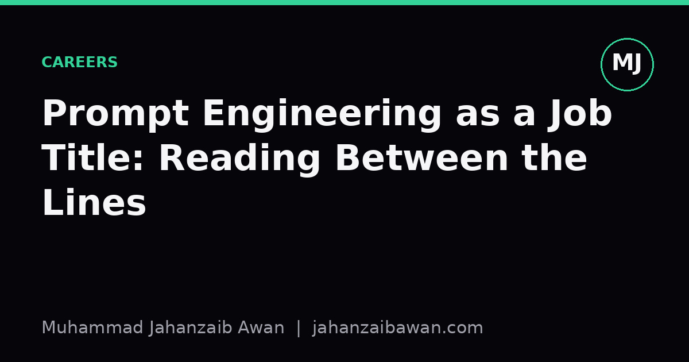

Prompt Engineering as a Job Title: Reading Between the Lines
The posting rarely wants someone who just writes clever prompts. Here is what the role actually tends to involve, and how to tell a serious opening from a vague one.

The title oversells a narrow skill
When prompt engineering first appeared as a job title, it suggested a fairly contained skill: find the right phrasing to coax a better answer out of a language model. That framing stuck in the public imagination, partly because it is easy to demonstrate in a tweet. Add a sentence like 'think step by step' and the model suddenly shows its working. It looks like a trick, and tricks make for good screenshots.
In practice, the postings that use this title are rarely hiring for tricks. They are hiring for someone who can sit between a business requirement and a model's actual behaviour, and make the two meet reliably. The wording in the prompt is the visible part of the job, the same way the paint colour is the visible part of a building. The structural work, deciding what the prompt needs to guarantee, how failures will be caught, and how the whole thing will be tested before it ships, is the real content of the role.
I think this mismatch matters because candidates prepare for the wrong interview. Someone who has memorised a list of prompting patterns, few-shot examples, chain of thought, role play framing, can still fail badly on the job if they have never built an evaluation harness or thought about how a prompt behaves under adversarial input. The title filters for the wrong signal unless you read past it.
What the posting is usually encoding
Strip the job description down and you typically find three recurring asks, even when none of them are named directly. The first is evaluation design: can you define what 'good' means for a given task well enough to measure it, and build a small test set that is not just a handful of examples the author liked. The second is integration: can you fit a prompt into a pipeline that includes retrieval, tool calls, output parsing, and fallback logic, so that the prompt is one component rather than the whole system. The third is failure analysis: when the model gets something wrong, can you tell whether the prompt caused it, the retrieval step caused it, or the task itself was ambiguous.
Consider a concrete example. A company wants a system that extracts structured fields, name, date, amount, from scanned invoices using a language model. A naive approach is to write one long prompt describing the fields and hope. A posting that says 'prompt engineer' but really wants this done properly is asking for something closer to: build a labelled set of two hundred invoices with known correct fields, write a prompt, run it, measure field level accuracy, look at the twenty worst failures, notice that the model consistently misreads dates in day-month-year format when the invoice is from a particular region, adjust the prompt or add a preprocessing step, and re-measure. That loop, not the single clever sentence, is the job.
Notice also that the measurement step requires a leakage-aware mindset even in a prompting context. If you tune your prompt by staring at the same twenty examples you use to judge success, you will overfit the wording to those examples and the prompt will look worse the moment it meets invoice two hundred and one. A held-out set, kept separate from the examples used for iteration, is just as necessary here as it is in any other predictive system. Many prompting failures in production are really generalisation failures dressed up as wording problems.
The parts that rarely make the job title but always make the job
Robustness testing is one of these hidden parts. A prompt that works on clean, well-formatted input often breaks when the input is messy: a misspelled field name, an invoice in a second language, a date written in words instead of digits. A serious role involves deliberately constructing these edge cases and checking that the system degrades gracefully, perhaps by flagging low-confidence extractions for a human to check, rather than confidently returning the wrong answer. This is closer to the mindset of a QA engineer than a copywriter, and it is the part of the job that actually protects the business from costly mistakes.
Cost and latency trade-offs are another hidden layer. A longer, more detailed prompt with extensive instructions and several examples might lift accuracy by a few percentage points but also increase the token count, and therefore the cost and response time, substantially. Suppose the detailed version costs four times as much per call and adds a second and a half of latency for a three percentage point accuracy gain. Whether that trade is worth it depends entirely on the application, a real time customer chat versus an overnight batch job will answer that question very differently. A person hired purely as a wordsmith will not have the context to make that call; someone hired to own the whole pipeline will.
Finally, there is the maintenance question, which is where I think the job title is most misleading. Models get updated, and a prompt tuned carefully against one model version can quietly degrade when the provider ships a new one. A good prompt engineering role treats the prompt as a versioned artefact with its own regression tests, the same discipline you would apply to a piece of software, so that a model update triggers a test run rather than a silent drop in quality discovered by an unhappy customer three weeks later.
Reading a posting with this in mind
When I look at a listing with 'prompt engineer' in the title, I look for a few specific signals before deciding it is worth my time. Does it mention evaluation, metrics, or test sets anywhere, even obliquely. Does it describe a pipeline with retrieval, tools, or structured output rather than a bare chat interface. Does it ask about debugging failure cases rather than just 'creativity' with language. Postings with these signals are usually describing a systems and evaluation role wearing a trendy name tag, and that is a good job to have.
Postings without any of these signals, that lean entirely on phrases like 'a knack for crafting the perfect prompt', are worth more scepticism. They may reflect a team that has not yet thought through how they will know whether the system works, which can be an interesting problem to help solve, but it is worth asking about directly rather than assuming the title tells you the scope. The practical move is simple: in the interview, ask how they currently measure prompt quality and what their last failure looked like. The answer will tell you more about the actual job than the title ever could.